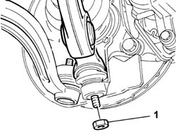
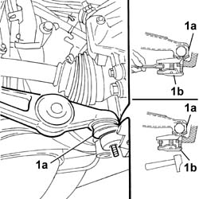
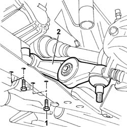

4410B45 Lower front track control ARM R.R.
- Path
- Procedures > 44 SUSPENSION AND WHEELS > 4410 FRONT SUSPENSION > 4410B FRONT SUSPENSION TRACK CONTROL ARMS > 4410B45 Lower front track control ARM R.R.
- Kind
- repair procedure (removal / refitting; the operation number is the code)
- Applies to
- all engines; all production periods
- Interactive page
- https://sloeber94.github.io/elrnDB-lThss/en/#/177596
Applies to: all engines; all production periods
 Removing
Removing
 Refitting
Refitting- Position the vehicle on a lift.
- Disconnect the negative battery terminal.
See in Op. 7055B54 PROTECTION/GUARD under engine - R.R.
See in Op. 4450B04 Right FRONT WHEEL (one) - R.R.
1. Undo the nut fixing the track control arm to the steering knuckle.

Applies to: all engines; all production periods
1. Extract the end (1a) of the front track control arm using a USAG-FACOM U.16A32 type extractor (1b) or a similar tool.

Applies to: all engines; all production periods
1. Undo the fixing bolts.
2. Remove the track control arm.

Applies to: all engines; all production periods
Refitting
Removing- Position the track control arm and secure it to the front suspension frame tightening the bolts to the recommended torque.
 | Value - daNm | Fastening | Component | Ø |
|---|---|---|---|---|
. | 7.4 | Bolt | LOWER FRONT TRACK CONTROL ARMS | M10x.1.25 |
- Position the track control arm ball joint in the special housing and secure it tightening the nut to the recommended torque.
| Value - daNm | Fastening | Component | Ø |
|---|---|---|---|---|
. | (front steering knuckle) 9 | Nut | LOWER FRONT TRACK CONTROL ARMS | M14X1.25 |
See in Op. 4450B04 Right FRONT WHEEL (one) - R.R.
See in Op. 7055B54 PROTECTION/GUARD under engine - R.R.
- Connect the negative battery terminal.
- Remove the vehicle from the lift.
Topics linked from this page (4)
- 4410A80 Lower fork connecting front suspension SHOCK ABSORBER to LOWER TRACK CONTROL ARM (one), left or right - R.R.
- 4450A10 FRONT WHEEL GEOMETRY - Check using optical equipment - Includes front wheel toe-in adjustment if necessary
- 4450B04 Right FRONT WHEEL (one) - R.R.
- 7055B54 PROTECTION/GUARD under engine - R.R.